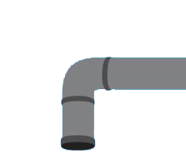

I grew up in the small town of Cut Bank, Montana. Over the years, I grew a passion
for just about anything that was designed and techonology. In High School, I spent 3 years on the yearbook staff and 2 years on the newspaper staff. I took responsiblity for the majority of the ads.
After graduating, I received a small scholarship from the Great Falls Advertising Federation. I spent the next 2 years at Montana State University in Bozeman, MT studying graphic design. After my second year, I transferred to the Art Institute of Phoenix, where I finished my education. With highest honors, I received my Bachelor of Arts in Graphic Design in December of 2005.
I received a Student Addy in the Spring of 2006 for my work on the Rockwell Tools campaign I worked on in school. Almost right out of school I landed the role as the Associate Art Director at The Motta Company in Phoenix, AZ (clients included Vistancia, Hampton Lake, Castle and Cooke Communities).
I left The Motta Company to work at MIS Group, Inc for whom I worked as an in-house designer. The poor economy forced MIS Group to make cuts, which lead me to position in U.S. Army. After 4 years of service I am now a veteran and focusing on what I really love, design and life.